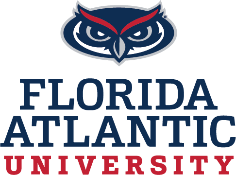
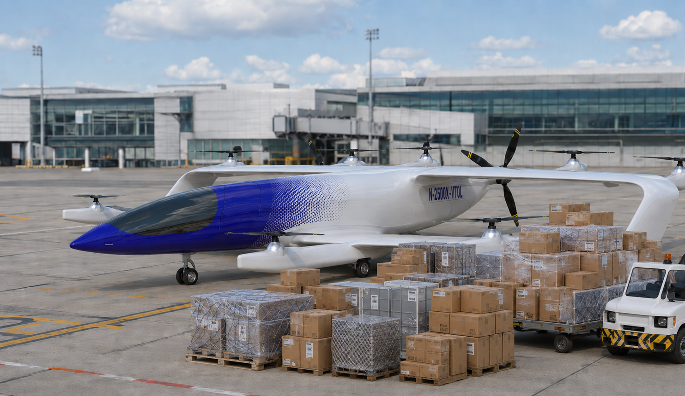

Interacting Airfoils & Stall Mitigation
Overset-mesh LES simulations of a pitching upstream airfoil interacting with a downstream airfoil.
CFD · AERODYNAMICS · AEROACOUSTICS
Computational fluid dynamics researcher working on unsteady aerodynamics, aeroacoustics, and high-performance simulations.

My research focuses on computational methods for unsteady aerodynamic flows, including interacting airfoils, stall mitigation, and an inverse aeroacoustic problem of gust-rotor interaction.
Overset-mesh LES simulations of a pitching upstream airfoil interacting with a downstream airfoil.
Inverse prediction of an unsteady disturbance-generator motion from far-field acoustic pressure.
Comparison study to determine best sprinkler design for optimal flow circulation
Numerical simulations to avoid hot gas blowbacks for a thruster
Numerical simulations of a rotating ball to understand Magnus Effect
Numerical simulations of lift enhancement by the injection of a lighter gas in an aerodynamic flow control gap for a wing
Numerical problem of Attitude control of a satellite using algorithms and feedback control law
Modeling of the mechanical behavior of composites materials from 2D images
Human walking simulation through numerical modeling of the knee joint.
Martin Lafargue & Siddhartha Verma
Journal of Theoretical and Computational Aeroacoustics, 2026.
PhD Researcher (Ocean Engineering)
2023 – Present
Computational fluid dynamics research involving unsteady aerodynamics, overset meshes, high-performance computing, and aeroacoustics.
Aerodynamics Engineer Intern
April 2022 – December 2022
Performed numerical simulation analysis of lift and drag values of a cargo transport box-wing eVTOL aircraft concept as a function of angle of attack using STAR-CCM+ and Pointwise Meshing.

CFD Engineer Intern
June 2021 – August 2021
Fluent numerical study to determine optimal conditions to avoid hot gas blowbacks for a thruster
Florida Atlantic University
Spring 2025
Taught MATLAB for engineering applications, held TA hours, and graded exams and projects.
Florida Atlantic University
Fall 2026
Prepared homework problems and solutions covering engineering data analysis concepts.
Undergraduate Work — La Prepa des INP, Bordeaux | 3 people
2019
Wrote a structured set of course notes on Principal Component Analysis (PCA), building the method up from first principles: data representation and weight matrices, means/variance/covariance, the centered-reduced data matrix and variance-covariance matrix, diagonalization to find principal axes and eigenvalues, percentage of inertia as a criterion for choosing how many components to keep, projection of individuals onto the principal subspace, and the correlation circle for interpreting how original variables relate to the new components. Illustrated every step with a running worked example using real Premier League player data (transfer price, height, goals, assists, interceptions per match for 9 players), including the resulting individual-projection plot and correlation circle.
View Source Material →Sports Writing & Editorial Content

Platform dedicated to long-form writing on sports, covering both current events and more reflective pieces across disciplines such as football, basketball, chess, tennis, cycling and more. Content ranges from recaps and previews to more reflective pieces, with a focus on the strategic, aesthetic, and human dimensions of sport. Available in French & English.